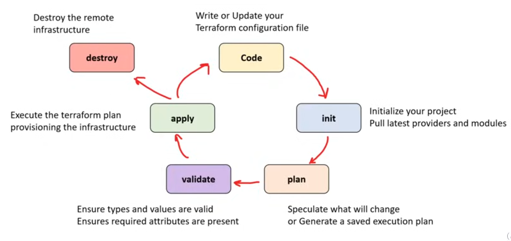
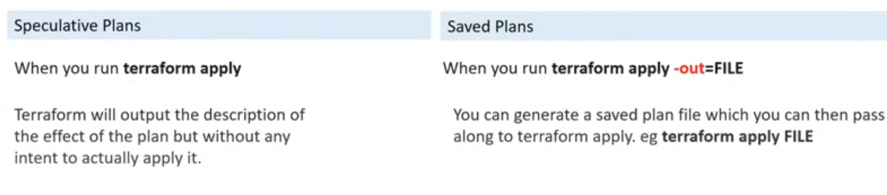
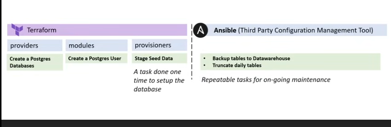

Terraform
open source cloud agnostic iac 
- Declarative configuration files
- Installable modules
- Plan and predict changes
- Dependency graphing
- State management
- Provision infrastructure in familiar languages
- Terraform
Registry /
Terraform modules
structure
- via AWS CDK
Speculative vs Saved 
Terraform state
Registry
Initializing
The initialization works like npm install; it fetches the requirements.
Structure
Terraform Block Terraform setting and the required providers -
source defines an optional hostname, namespace, and type
- By default, providers are pulled from the Terraform Registry
terraform {
required_providers {
docker = {
source = "kreuzwerker/docker"
version = "~> 3.0.1"
}
}
}
Provider Block Stores configuration of the provider |
| List all the providers |
bash terraform providers |
terraform host = "ssh://user@remote-host:22" |
| - Aliases (To disguise the same providers e.g., AWS regions) |
Resource Block Components of the infrastructure (type and
name)
// resource type docker_container resource name nginx
resource "docker_image" "nginx" {
name = "nginx:latest"
keep_locally = false
}
modules (Modules are just like roles in Ansible; they are
pre-packed.) - Providers are the raw APIs, whereas modules give
you shorthand.
| Variable Type | Description |
|---|---|
| Input Variables | Parameters passed to Terraform modules. They can be declared in either the root module or a child module. |
| Options | - default: Assigns a default value to the variable. |
| - type: Specifies the data type of the variable. | |
| - description: (Optional) Used for documentation purposes. | |
- validation: Provides a way to add conditional checks (similar to if statements) to validate input values. |
|
| - sensitive: Marks the variable as sensitive, meaning it won’t appear in the output of Terraform (useful for private or secret values). |
variable "docker_ports" {
type = list(object({ internal = number }))
default = [{ protocol = "tcp" }]
}
HEREDOC multiline strings
bash <<EOT test world hello EOT
string directive % % can be used in HEREDOC - ~ will strip the
space
"Hello %{if var.name != ""}%{else}%{endif}"
<<EOT
%{for ip in aws_instance.example.*.private_ip ~}
server ${ip}
%{ endfor }
EOT
nullis either absent or default
ternary if else conditions the return type for the if statement must
be the same type
for loops
# Arrays
[for s in var.list : upper(s)]
# Maps
[for k, v in var.map : length(k) + length(v)]
# Returning structure
{for s in var.list : s => upper(s)}
splat expression iterate over everything
Dynamic blocks similar to loop in Ansible
Variables Definitions Files
Env Vars
Outputs similar to Ansible registers
data block(sourceandname) Docs
data "aws_ami" "example" {
most_recent = true
owners = ["self"]
tags = {
Name = "app-server"
Tested = "true"
}
}
lifecycle-preconditionif statement for the data blockpostcondition
ImportantUse provisioners as a last resort. There are better alternatives for most situations. Refer to Declaring Provisioners
file provisionercopies files from local machine to new resourceconnectiontells how to establish connection- With
sshconnect through Bastion Host
- With
null_resourcesplaceholder for resources with no providertriggersMap of values which cause provisioners to re-run
Local Exec
Execute local commands after a resource is provisioned
command (required) Command to execute
working_dir
interpreter Entry point for the command
environment env vars
resource "terraform_data" "example1" {
provisioner "local-exec" {
command = "open WFH, '>completed.txt' and print WFH scalar localtime"
interpreter = ["perl", "-e"]
}
}
Remote Execute
It’s the same, just has modes
You can only choose to use one mode at a time
- Inline list of command strings
- Script script that will be copied and executed
- Scripts multiple script execution
Execution Plans
A Manual Review of What I’ll Add, Change, or Destroy Before Applying Changes
Visualize
Use Graph Viz to create the graph of your plan
Terraform Core and Plugins
Coreuses RPC to communicate with pluginsPluginsexpose implementation for a specific service or provisioner
Terraform and Ansible
